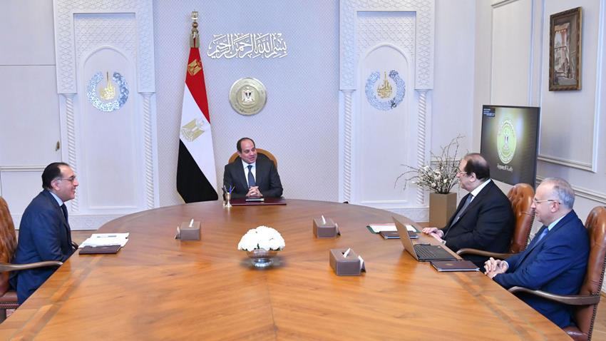

Al-Sisi affirms Nile Basin cooperation as pillar of Egyptian-African relations

- President Abdel Fattah Al-Sisi has reiterated the significance of collaboration with Nile Basin countries as a cornerstone of Egypt’s engagement with Africa. This cooperation leverages Egypt’s human capital and expertise in water resources and other sectors, fostering numerous development initiatives that serve the African continent.
- The President’s comments came during a Tuesday meeting with Prime Minister Mostafa Madbouly, General Intelligence Service Chief Abbas Kamel, and Water Resources and Irrigation Minister Hani Sweilam.
- According to Presidential Spokesperson Ahmed Fahmy, the meeting addressed recent progress in joint irrigation and water resource projects with Nile Basin nations. Discussions focused on enhancing rainwater storage, securing drinking water sources, purifying waterways, mitigating flood risks, and constructing river ports.
Source : click here